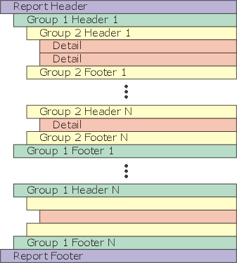
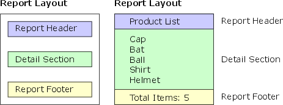
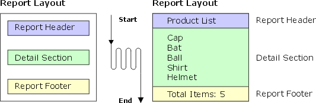
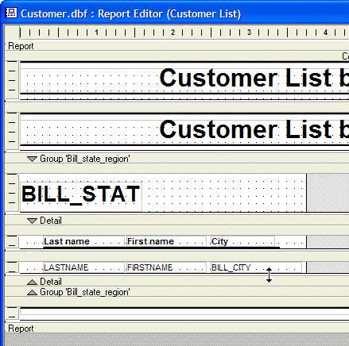
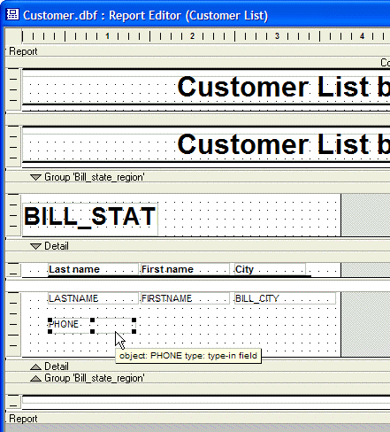
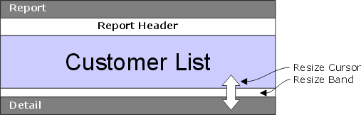

Report Structure
Alpha Anywhere Reports are divided into sections, of which there are three types:
Report section : prints at the beginning and end of the report. The Report section acts as a wrapper for the rest of the Report.
Detail section : prints individual records, and repeats until all records have been printed.
Grouping levels : groups related records together. Grouping levels are sections that you create. They repeat for each group of records.

Within each of these sections, you can have multiple header and footer layout edit regions. Edit regions are where the fields, text, and other objects are placed. The edit regions you use in your Report vary depending on your needs.
Before jumping in and creating a report, it is helpful to first become familiar with the Report Editor. The Report Editor shows the division between sections and edit regions by using dark gray section-title bars and light gray edit region-title bars.
On each of these bars is an outline button which allows you to show or hide edit regions. Clicking the button when it displays the minus symbol (-) hides the edit regions, while clicking the outline button while it displays the plus symbol (+) shows the edit regions. Clicking an outline button on a particular edit region-title bar shows or hides that edit region. Clicking an outline button on a particular section-title bar shows or hides all of the edit regions contained in that section.
These buttons only affect what displays in the Report Editor, they do affect the appearance of the report when it is printed or previewed. You can also display and hide report components by choosing View > Sections, View > Titles, or View > Regions. as you work with the editor, you will find these options helpful in reducing the amount of clutter you see on the screen.

The sections and edit regions of a report print at different times. For example, the Report Header layout region prints once at the beginning of the report and the Report Footer layout region prints once at the end of the report. The Detail layout region, however, is printed repeatedly in the middle of the report until all of the records have been listed.
The following table describes where and when report layout regions appear. A spillover page occurs when the detail section of a group begins on one page and ends on another.
|
Section |
Typical Usage |
Where |
When |
|
Report Header |
Contains the report title, corporate logo, and background information. |
At the beginning of the report. |
One time per report. |
|
Page Header |
Contains the report title |
At the top of the page. |
One time per page. |
|
Group Header |
Contains the field on which the detail records are grouped and detail fields column headings. |
At the beginning of each data group. |
Once time per data group of the report but not at the top of the spillover pages. |
|
Detail Header |
Contains field column headings |
At the beginning of the detail region. |
If there are no groups, one time per detail region of the report. |
|
Detail |
Field data |
This is a row of data. |
One time for each record. |
|
Detail Footer |
Graphics that separate the detail section from the following group (if any). |
At the end of the detail region. |
One time per detail region of the report. |
|
Group Footer |
Summary calculations for the group. |
At the end of each data group. |
Once time per data group of the report but not at the bottom of the spillover pages. |
|
Page Footer |
Page number, date. |
At the bottom of the page. |
One time per page. |
|
Report Footer |
Summary calculations for the total report. |
At the bottom of the page, but above the page footer. |
One time per report. |
Other layout regions include Continuation Headers and Footers, Repeating Group Headers and Footers, and Special Page Headers and Footers.
The Report section is the outermost section of a report. It can have a Report Header and/or Report Footer edit region. The Report Header is the first region to print; the Report Footer is the last. The Report Header typically contains general information about the report, such as its title; the Report Footer contains summary information for the report, such as totals:

To insert or remove the Report Header or the Report Footer, select Report > Report Properties. The Report Properties dialog box appears. Choose the Header/Footer tab and check or deselect the Has Report Header and Has Report Footer check boxes.
 TIP : Another way to
insert or remove the Report Header and Report Footer edit regions is by
right clicking on the Report section-title bar, and choosing the appropriate
edit region from the right-click menu.
TIP : Another way to
insert or remove the Report Header and Report Footer edit regions is by
right clicking on the Report section-title bar, and choosing the appropriate
edit region from the right-click menu.
The other choices, including Has Page Header, Has Continuation Header, refer to special headers and footers you can create. Information about these special headers and footers can be found in Special Headers and Footers.
When you run a report, each edit region prints sequentially from top to bottom until the Detail region is reached. The fields and objects placed in the Detail region then print repeatedly for each record in the report, until the report either runs out of records, or a group break occurs (explained in the section Grouping Related Records later in this chapter). After all the records are printed, all of the edit regions below the Detail region are printed sequentially:

Along with the Detail region, the Detail section can also contain a
Detail Header and a Detail Footer. These edit regions appear before and
after the Detail region. Typically, the Detail Header is used to display
column titles for fields listed in the Detail region, and the Detail Footer
is used to print summary information about the Detail region data.
On any page that records from the Detail edit region print, the Detail
Header and Detail Footer edit regions appear (provided you have created
them).
You may expand the Detail section vertically to place multiple fields above or below each other. In the first picture, note how the cursor changes to a double-headed arrow when it is above a boundary that can be moved.

In this second picture, note how the designer stretched down the Detail section and place the new Phone field below the Lastname field.

Fields, text, and other objects are placed in the edit regions of the report in the same way as they are placed on forms.
When placing fields and objects into an edit region, often it is helpful to adjust the edit region's size. This can be done using the mouse. Move the mouse to the lower edit region-title bar. When the cursor-shape changes to a double arrow, you can click and drag the edit region up or down to make it smaller or bigger.

To prevent too much space from being wasted when the report prints, make the edit region as small as Possible. Some objects, such as Rich Text Objects, Rich Text Fields, and Memo Fields can automatically expand when they are printed, and frames placed around these objects can automatically expand as well.
Inserting and Removing Edit Regions
To add or remove the Detail Header edit region or the Detail Footer edit region:
Select Report > Detail Properties.
The Detail Properties dialog box appears.
Display the Header/Footer tab.
-
Check or
deselect
the Has Header and Has Footer check boxes. The other controls, including Has Header and Records with Header are used to create special headers and footers, and to keep a certain number of records together with each of these edit regions.
 TIP : You can right
click on the Detail-section title-bar to open the Detail
Properties dialog box. Also, you can right click the Detail section
title-bar and choose the appropriate section from the right-click menu.
TIP : You can right
click on the Detail-section title-bar to open the Detail
Properties dialog box. Also, you can right click the Detail section
title-bar and choose the appropriate section from the right-click menu.
You can also remove every edit region in the Detail section including the Detail edit region. This is useful if you are interested in viewing totals or other summary information, but you do not to see the actual records. To remove the Detail edit region:
Select Report > Report Properties.
The Report Properties dialog box appears.
Display the Report tab.
Clear the Has detail section check box. The Detail edit regions disappear, but the Detail section-title bar does not.
See Also